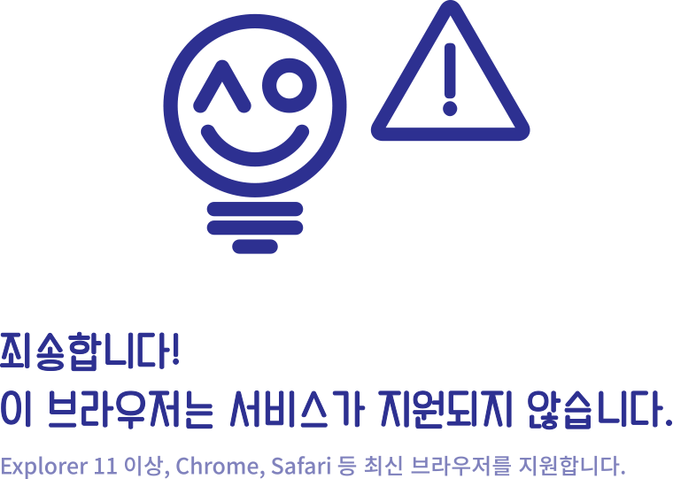

<!DOCTYPE html>
<html lang="en">
<head>
	<meta charset="UTF-8">
	<title>알뜰 서울 | Finding of Alddle Seoul by Nogo! Team(Code for Seoul)</title>
	<meta name="author" content="CodeforSeoul by blim(kkh975@naver.com)">
	<meta name="description" content="Finding of Alddle-Seoul 알뜰 서울의 발견은 자치구별로 다른 여러가지 행정 서비스를 한 눈에 볼 수 있는 서비스입니다. Finding of Alddle-Seoul  is a service to search a variety of Seoul city administrative services">
	<meta name="keywords" content="여성, 복지, 보육, 취업, 일자리, 행정서비스, 교육, 은퇴, 생애주기, 마을, 공동체, 보건, 의료, 취학, 주민센터, 보건소, 구청, 어르신, 서비스, 서울시, 주민편의, 도서관, 주민자치, 민원, 생활법률, 수급, 거주자우선주차, 여권, 지방세, 정보공개, 환경개선부담금, 생활폐기물, 민방위, 시민안전봉사대, 종량제, 공공시설, 관광, 문화, 구민회관, 체육시설, 둘레길, 아동, 어린이, woman, female, child, welfare, job, education, retirement, administration, health care, senior, seoul, medical treatment, medical, sightseeing, passport, tex, culture, tourism">
	<meta name = "viewport"content = "width = device-width, initial-scale = 1, maximum-scale = 1, user-scalable = no">

	<!-- favicon -->
	<link rel="apple-touch-icon" sizes="57x57" href="favicon/favicon-57x57.png">
	<link rel="apple-touch-icon" sizes="114x114" href="favicon/favicon-114x114.png">
	<link rel="apple-touch-icon" sizes="72x72" href="favicon/favicon-72x72.png">
	<link rel="apple-touch-icon" sizes="144x144" href="favicon/favicon-144x144.png">
	<link rel="apple-touch-icon" sizes="60x60" href="favicon/favicon-60x60.png">
	<link rel="apple-touch-icon" sizes="120x120" href="favicon/favicon-120x120.png">
	<link rel="apple-touch-icon" sizes="76x76" href="favicon/favicon-76x76.png">
	<link rel="apple-touch-icon" sizes="152x152" href="favicon/favicon-152x152.png">
	<!-- <link rel="apple-touch-icon" sizes="180x180" href="favicon/favicon-180x180.png"> -->
	<!-- <link rel="icon" type="image/png" href="favicon/favicon-192x192.png" sizes="192x192"> -->
	<!-- <link rel="icon" type="image/png" href="favicon/favicon-160x160.png" sizes="160x160"> -->
	<link rel="icon" type="image/png" href="favicon/favicon-96x96.png" sizes="96x96">
	<link rel="icon" type="image/png" href="favicon/favicon-32x32.png" sizes="32x32">
	<link rel="icon" type="image/png" href="favicon/favicon-16x16.png" sizes="16x16">

	<!-- // css // -->
	<link href="stylesheets/css/main.css" media="all" rel="stylesheet" type="text/css" />
</head>
<body>

<!--[if lt IE 11]>
<div style="margin-top:50px; text-align:center;">
	
</div>
<![endif]-->

<![if !IE]>
<div id="bodyLy">
	<section id="loadingLy">
		<h1></h1>
		<footer>
			<address></address>
		</footer>
	</section>
</div>

<!-- loading -->
<script type="text/javascript" src="bower_components/requirejs/require.js" data-main="javascripts/loader.js"></script>
<![endif]>

</body>
</html>